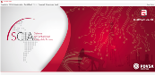
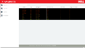

Sistema de Confiabilidad Integral de Activos es un sistema realizado para la industria petrolera que en su principio estaba desarrollado en un entorno de Escritorio bajo código python, pero en un punto entre los nuevos requerimientos del sistema exigidos por el cliente pide la migración de esta aplicación a un entorno web donde para tal tarea se implementa en un framework JavaScript llamado Qooxdoo permitiendo hacer interfaces en un entorno web emulando el comportamiento Desktop y utilizando del lado del servidor el lenguaje python.

Es un sistema con la capacidad de manejar variables dinámicas, control de bitácoras, gráficas, y estadísticas de estas variables, haciendo un sistema versátil adaptable al negocio que se quiere implementar está desarrollado en html, JavaScript y con el framework php Codeigniter es un software también desarrollado para PDVSA Industrial.

Este software permitirá la migración del sistema SCADA a un entorno web entre los lenguajes que permiten está adaptación está los lenguajes tales como: JavaScript con NodeJs, python, C++, este es un sistema de alta complejidad y esta en su fase inicial de desarrollo donde se está demostrado que es factible su migración a un entorno web, es el proyecto donde estoy trabajando actualmente.

Es un sistema que permite el registro de usuarios para así disponer de una data de personas beneficiadas, dónde están ubicadas y quiénes son usuarios de gas residencial, comercial, directo y de la empresa privada.
También permitirá el reordenamiento de las rutas de distribución, así como determinar la infraestructura necesaria y necesidades, con el objetivo de garantizar a los más de 120 mil usuarios la entrega oportuna y segura.
El registro se hace a través de tres modalidades: en la web www.gascomunalenlinea.pdvsa.com, el teléfono 0800-2662662 y el registro personalizado que se lleva a efecto en la Oficina de Atención al Usuario de Gas Comunal en Porlamar, municipio Mariño.